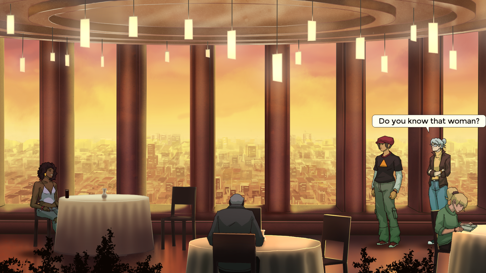
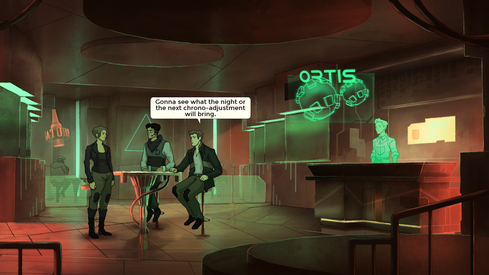

Spleen est un mot qui définit très bien Old Skies, un jeu vidéo sorti cette année. Développé par des vétérans du genre (Wadjet Eye Games a été fondé par le game designer Dave Gilbert il y a bientôt vingt ans), ce point’n’click nous fait jouer une agente temporelle, Fia Quinn, dont l’employeur, l’entreprise ChronoZen, permet à de riches clients et clientes d’effectuer des voyages dans le passé. Les raisons de faire appel à ses services ne manquent pas : revoir une dernière fois un être aimé, infléchir un moment crucial de sa vie ou que sais-je encore. Toutefois, pas question de faire n’importe quoi : certaines personnes ou événements sont intouchables, car jugés trop importants, trop influents, pour prendre le risque de les changer. Une entreprise comme ChronoZen est précisément là pour éviter que n’importe qui aille bouleverser du tout au tout le cours de l’Histoire. Cela signifie aussi que le quidam moyen peut bien disparaître si le destin en a décidé ainsi. C’est injuste, mais c’est le business.
 Nozzo, le collègue de Fia, est toujours disponible pour la renseigner.
Nozzo, le collègue de Fia, est toujours disponible pour la renseigner.
On ne devient pas agent temporel par hasard. Or Fia Quinn est une très bonne agente, qu’on sent tout de même dès le début du jeu un peu blasée. Certes, son job la protège des soubresauts du temps (elle ne risque pas à tout instant de n’avoir jamais existé), mais comment maintenir une relation stable si vos amis ou votre famille sont susceptibles d’être rayés de la carte à tout moment ? Comment apprécier un bon bouquin s’il change de titre, d’auteur et de contenu alors que vous n’en êtes qu’à la moitié ? Alors Fia se concentre sur ce qu’elle fait de mieux : son boulot. Elle enchaîne les missions pour toutes sortes de gens, assistée de son collègue et binôme Nozzo. Son périmètre : New York, qu’elle parcourt du XIXe à un XXIe siècle bien avancé.
 Les personnages sont nombreux, divers et bien écrits.
Pour agir, Fia dispose de quelques outils bien pratiques de son époque, mais devra surtout faire avec ce qu’elle trouve sur place. Surtout, elle devra discuter avec les divers personnages qui vont se présenter sur son chemin afin de récolter un maximum d’informations et éventuellement les croiser avec les archives qu’elle peut consulter à l’envi. En ce qui concerne les énigmes, elles sont généralement inventives et bien fichues, même si j’ai dû m’aider d’une soluce à l’une ou l’autre reprise (je ne suis pas le plus patient en la matière). Les missions ne se ressemblent pas, mais proposent une progression en mobilisant à chaque fois de nouvelles idées de gameplay sans pour autant jeter à la poubelle ce qui précède. Old Skies est aussi plus long qu’il en a l’air : il m’a fallu une bonne quinzaine d’heures pour le terminer.
 Les agents de ChronoZen passent un temps conséquent à siphonner des cocktails au bar.
Les doublages (en anglais) sont magnifiques (ces voix !), la direction artistique tout à fait charmante (même s’il faut aimer les teintes de vert) et la musique contribue grandement à l’atmosphère mélancolique du jeu, qui se rapproche du film noir. Au fur et à mesure des missions, on commence à discerner un fil rouge dans le récit, on s’attache aux personnages, on s’habitue à voir leur présent changer sans cesse et on mesure surtout leur solitude écrasante. C’est un jeu qui, finalement, s’intéresse à ce qui fait le sel d’une existence et fait mouche dans la façon dont il déploie son récit.
Sortie : 2025